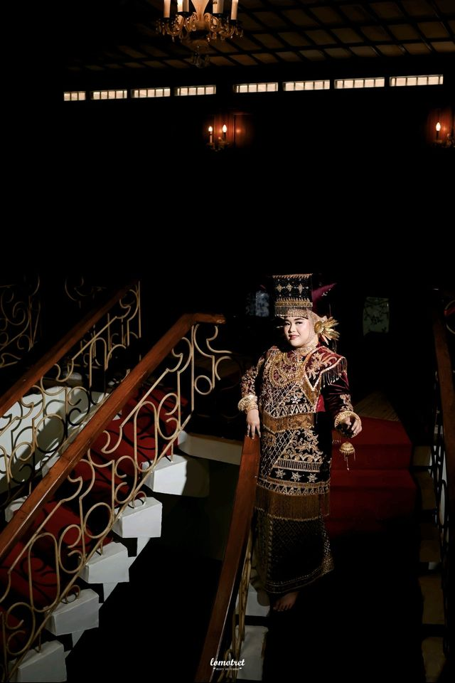
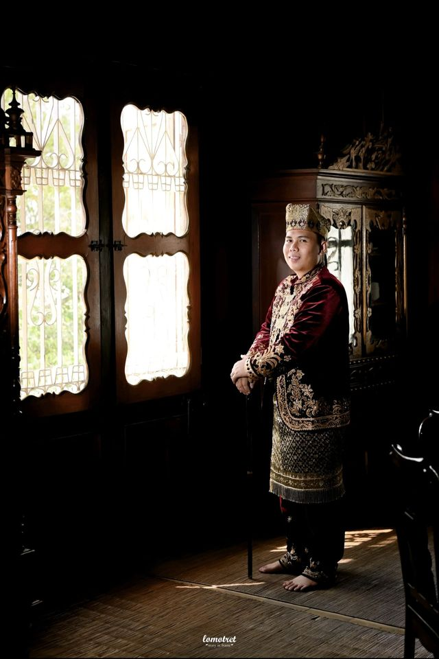

Egy N' Wahyu · Live
Akad Nikah
Sabtu, 12 Desember 2026
Pukul 16.00 WIB
Jl. Akib Mentaib (Duspa), Pagar Alam
Admit One
Tamu Undangan
No. 1212
★ 12 · 12 · 2026 ★
Kepada Yth. Bapak/Ibu/Saudara/i
Tamu Undangan
Mohon maaf apabila ada kesalahan penulisan nama/gelarLive in Pagar Alam
The Wedding Tour · 12.12.2026
وَمِنْ اٰيٰتِهٖٓ اَنْ خَلَقَ لَكُمْ مِّنْ اَنْفُسِكُمْ اَزْوَاجًا لِّتَسْكُنُوْٓا اِلَيْهَا وَجَعَلَ بَيْنَكُمْ مَّوَدَّةً وَّرَحْمَةً
"Dan di antara tanda-tanda kekuasaan-Nya ialah Dia menciptakan untukmu pasangan hidup dari jenismu sendiri, supaya kamu merasa tenteram kepadanya, dan dijadikan-Nya di antaramu rasa kasih dan sayang."
QS. Ar-Rum : 21
The Line-Up
Assalamu'alaikum Warahmatullahi Wabarakatuh
Dengan memohon rahmat dan ridho Allah SWT, kami bermaksud menyelenggarakan pernikahan putra-putri kami:

Putri ke-1 (Pertama) dari
Bapak Mairulsyah (Ujang)
& Ibu Etika Suryanti, S.Kom (Tika)

Putra ke-4 (Empat) dari
Bapak Panyadi, SH (Teluk Kijing)
& Ibu Nurtiyani, S.Pd.I (Petaling)
Love Story
Track 01 · 2015
Segala sesuatu telah tertulis dengan indah dalam rencana-Nya. Pertama kali kami dipertemukan di bangku SMK, tepatnya pada hari pertama MOS (Masa Orientasi Siswa). Siapa sangka pertemuan tanpa perbincangan dan tanpa bertatapan mata itu menjadi awal mula dari perjalanan panjang kami bersama.
Track 02 · 15 Maret 2017
Seakan didukung semesta yang selalu menyatukan kami dalam setiap aktivitas, kami berdua selalu menjadi andalan guru untuk ke sana kemari. Perasaan yang awalnya samar perlahan tumbuh menjadi nyata, tepatnya setelah study tour. Egy sudah menyadari ada sikap yang aneh pada Wahyudi, karena selama study tour Egy benar-benar diperlakukan selayaknya ratu, dan ternyata bukan hanya Egy, guru-guru yang ikut pun menyadari sikap Wahyudi.
Perlahan namun pasti, Wahyudi makin menunjukkan perhatian dan perilaku yang berbeda dari teman biasa. Salah satu sahabat kami, Sindi, memberi tahu Egy tentang perasaan Wahyudi, lalu menyampaikan kepada Wahyudi bahwa Egy sudah tahu perasaannya. Berkat dorongan dan dukungan dari Sindi, Wahyudi akhirnya memberanikan diri. Tepat pada malam 15 Maret 2017, Wahyudi mengungkapkan perasaan dan keinginannya dengan "Bismillah". Sempat mendapat penolakan, tetapi Wahyudi tetap menunggu dan memastikan, hingga akhirnya Egy berkata "Yes".
Track 03 · 29 Maret 2026
Atas kehendak-Nya serta restu dari orang tua dan keluarga, kami melangsungkan lamaran. Pada akhirnya jemari menemukan genggaman yang tepat, kepala menemukan bahu yang tepat, dan hati menemukan rumah yang tepat.
Track 04 · 12 Desember 2026
Dan kini tibalah waktu yang telah lama kami nantikan. Kami percaya, bukan karena bertemu lalu berjodoh, tetapi karena berjodohlah maka Allah pertemukan kami dengan cara terbaik-Nya. Dengan penuh rasa syukur, kami memutuskan untuk mengikrarkan janji suci pernikahan pada 12 Desember 2026.
"Apa yang menjadi takdirmu, akan menemukan jalannya untuk menemukanmu."Ali bin Abi Thalib
Tour Dates
Yang insya Allah akan dilaksanakan pada:
Egy N' Wahyu · Live
Sabtu, 12 Desember 2026
Pukul 16.00 WIB
Jl. Akib Mentaib (Duspa), Pagar Alam
Egy N' Wahyu · Live
Minggu, 13 Desember 2026
Pukul 09.00 WIB – Selesai
Jl. Akib Mentaib (Duspa), Pagar Alam
Backstage
Guest List
Kirimkan doa dan ucapan untuk kedua mempelai, sekaligus konfirmasi kehadiran Anda.
Memuat ucapan…
Merupakan suatu kehormatan dan kebahagiaan bagi kami apabila Bapak/Ibu/Saudara/i berkenan hadir dan memberikan doa restu kepada kedua mempelai.
Wassalamu'alaikum Warahmatullahi Wabarakatuh
Turut Mengundang
Keluarga Besar Syambri (Alm) & Rusmawati (Almh)
Kami yang berbahagia,
Keluarga Bapak Mairulsyah & Ibu Etika Suryanti, S.Kom
Keluarga Bapak Panyadi, SH & Ibu Nurtiyani, S.Pd.I